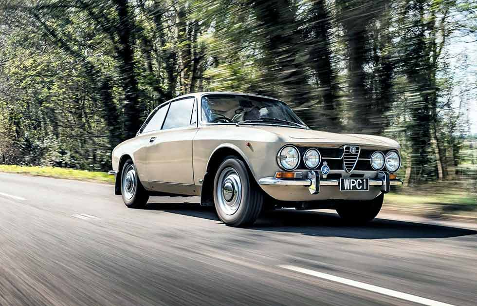
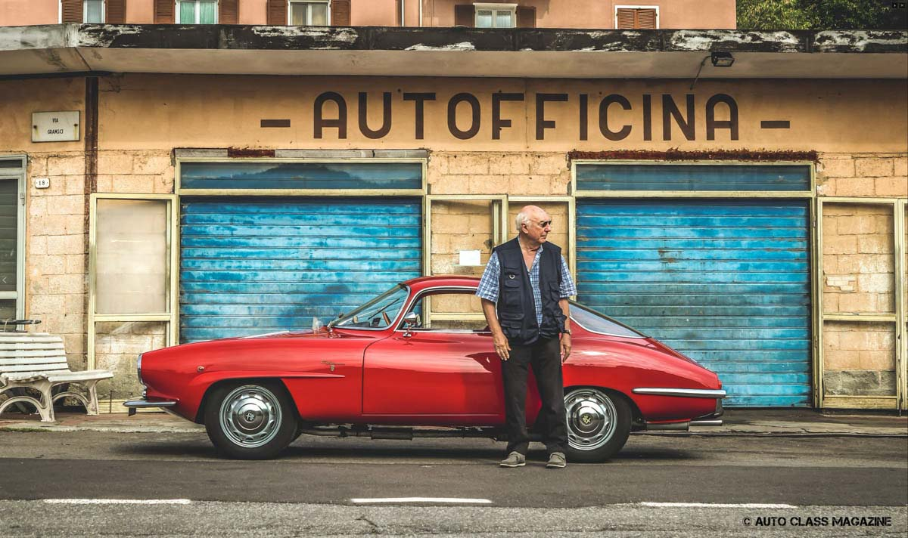
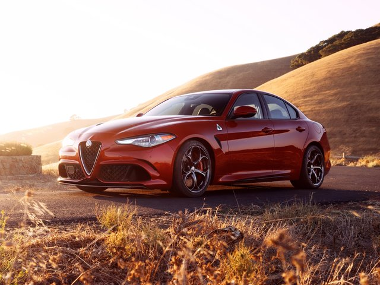

ALFA ROMEO Giulia Berlina
 |
1962 - 1978
Alfa Romeo launched the Giulia model in 1962, at the Monza racing circuit. This new saloon car from Alfa featured a new aerodynamic look - curved windscreen, rounded headlights and cam tail - and was fitted with a 1.6L engine delivering 92 hp and reaching a top speed of 102 mph...
FULL DESCRIPTION AND TECHNICAL SPECIFICATIONS |
ALFA ROMEO Giulia Coupe 1300 GTA Junior
 |
1965 - 1972
After the Giulietta era, when Alfa Romeo sold almost 180.000 units, the Italian carmaker made a successor for it, the Giulia. Giulia was designed as a sporty sedan, but Autodelta, Alfa Romeo's motorsport department, understood that it might be an excellent race car and pushed the company to make it as a coupe...
FULL DESCRIPTION AND TECHNICAL SPECIFICATIONS |
ALFA ROMEO Giulia
 |
2016 - Present
The Giulia marked the return of the rear-wheel-drive sedans for the Italian car-maker. It was a complex program that led to a big change in its entire lineup. It was a true contender for the premium German cars. Italian cars were all about styling. With some exceptions, all of them were well designed...
FULL DESCRIPTION AND TECHNICAL SPECIFICATIONS |
ALFA ROMEO Giulia Berlina 1962 - 1978
Alfa Romeo launched the Giulia model in 1962, at the Monza racing circuit.
This new saloon car from Alfa featured a new aerodynamic look - curved windscreen, rounded headlights and cam tail - and was fitted with a 1.6L engine delivering 92 hp and reaching a top speed of 102 mph. The Giulia Berlina was equipped with both front and rear benches (therefore able to accommodate up to 6 people), plenty of leg room and rear arm rest. This model was available with two other trim levels - TI and TI Super - and underwent its first changes in 1972, when it received larger engines and different drive ratios. The Giulia Berlina was discontinued in 1978.
ALFA ROMEO Giulia Coupe 1300 GTA Junior 1965 - 1972
After the Giulietta era, when Alfa Romeo sold almost 180.000 units, the Italian carmaker made a successor for it, the Giulia.
Giulia was designed as a sporty sedan, but Autodelta, Alfa Romeo's motorsport department, understood that it might be an excellent race car and pushed the company to make it as a coupe. Bertone started to work and shortened Giulia's platform and designed a new bodywork for it, which barely resembled the sedan version.
The only parts that could resemble the sedan version were the headlights. Yet, in those times, most cars featured round headlamps. With its sloped shape and three-box sedan appearance, the Giulia Coupe was a good starting point for Autodelta to create a racing vehicle. It changed the body panels to aluminum, made the inner steel metallic parts thinner, and installed oversized dials for the speedometer and tachometer.
With its 2+2 construction and tall greenhouse, the Giulia Coupe could accommodate four occupants inside, separated by the transmission tunnel. Autodelta installed slim windows, and it replaced even the door handles with lighter alternatives. Thus, the Giulia GTA was born. While the GT stood for Grand Turismo, the A stood for "Alleggerita" (Lightened).
Under the hood, Alfa Romeo installed on a 1.3-liter engine developed by Autodelta from the larger 1.6-liter unit instead of working on the already existing 1.3-liter unit from the regular Giulia. The Italian engineers shortened the pistons' stroke and thus resulted in a rev-happy engine. They paired it to a 5-speed manual gearbox. As a result, the Giulia GTA 1300 Junior was a highly successful race car in its class.
ALFA ROMEO Giulia 2016 - Present
The Giulia marked the return of the rear-wheel-drive sedans for the Italian car-maker.
It was a complex program that led to a big change in its entire lineup. It was a true contender for the premium German cars.
Italian cars were all about styling. With some exceptions, all of them were well designed. Unfortunately, the change to the front-wheel-drive was a good idea for mas-market, but not a bright one for the premium segment. Alfa Romeo managed to revolutionize its range with the introduction of the 2016 Giulia.
The exterior design was one of its most important advantages. The big, triangular, shield in the front was accompanied by two lower-mounted grilles in the apron. With its „angry-eyes” looking headlights, narrow on the inside and swept-back over the front fenders inspired a dynamic design. From the side, the short and tall trunk, combined with the narrow front, inspired a sports-sedan vehicle. And that's what it was.
Inside, the Giulia offered one of the best-looking interiors in its class. It managed to incorporate the infotainment display next to the instrument cluster. It didn't look like an aftermarket tablet mounted over the center stack. The bucket-seats upfront promised good support while fast cornering. In the back, there was room for two adults in a comfortable position, or three if they were very close friends. The big transmission tunnel was intrusive in the cabin.
For the engine compartment, Alfa Romeo installed 2.0-liter gasoline or a 2.2-liter diesel engine. Both were turbocharged and were offered with a rear or all-wheel-drive. It was fitted with a 6-speed manual or an 8-speed automatic.